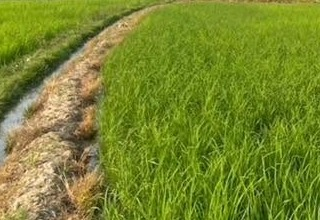
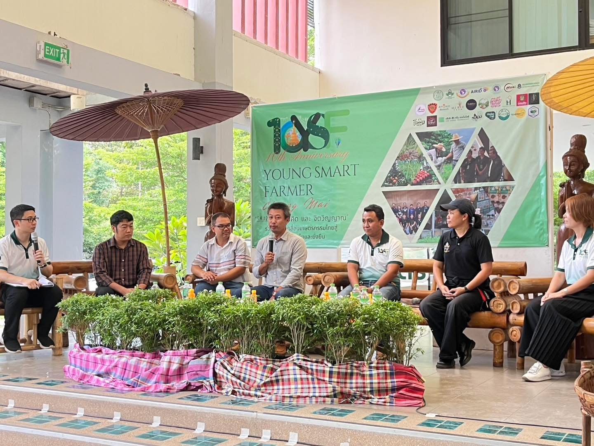
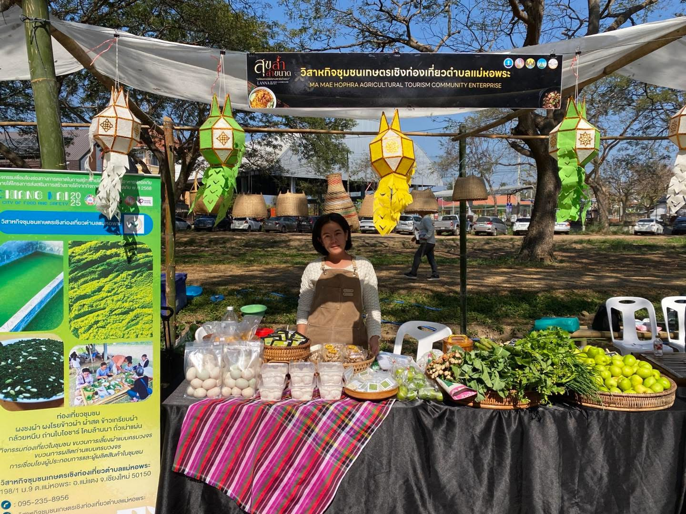
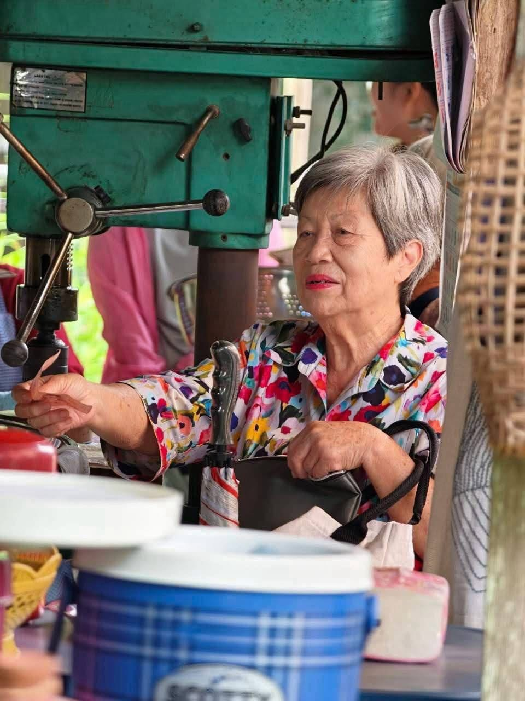
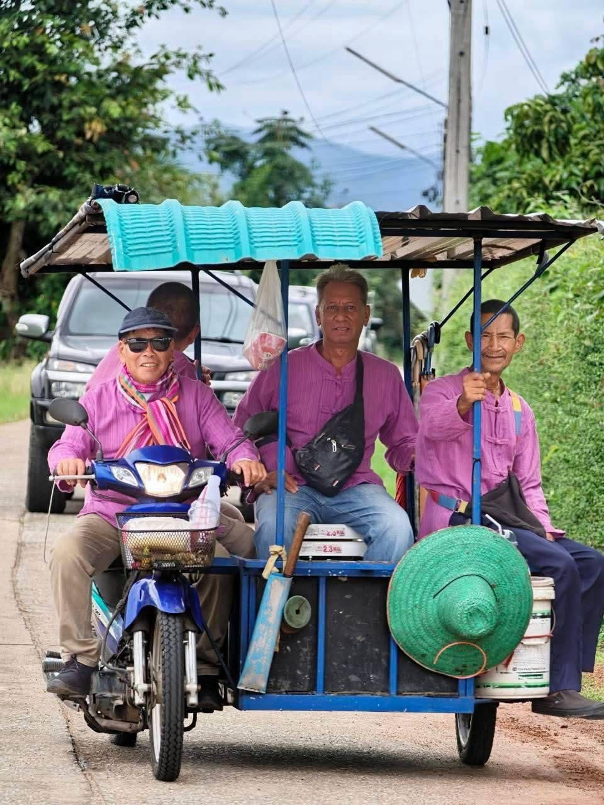
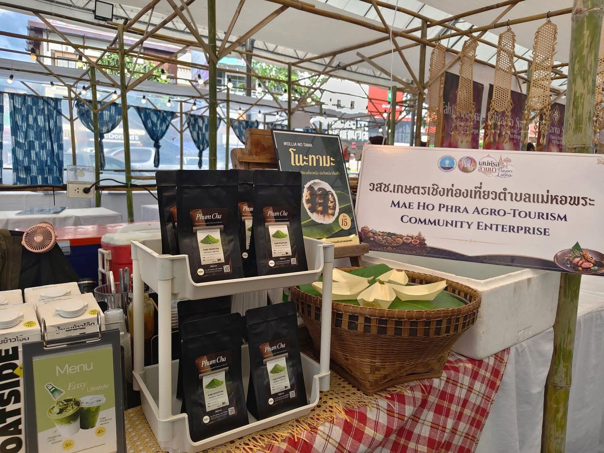

วิสาหกิจชุมชนเกษตรเชิงท่องเที่ยวตำบลแม่หอพระ อำเภอแม่แตง จังหวัดเชียงใหม่ นับเป็นต้นแบบการรวมกลุ่มของคนในท้องถิ่นที่นำศักยภาพด้านการเกษตรและทรัพยากรธรรมชาติมาต่อยอดสู่การท่องเที่ยวอย่างยั่งยืน จนได้รับการรับรองมาตรฐานโครงการ TAT STAR จากการท่องเที่ยวแห่งประเทศไทย
การดำเนินงานของกลุ่มมีความโดดเด่นในฐานะศูนย์วิจัยชุมชนและนวัตกรรมเกษตร ที่มุ่งถ่ายทอดองค์ความรู้ด้านการอนุรักษ์และการบริหารจัดการทรัพยากรชีวภาพอย่างเป็นรูปธรรม โดยเฉพาะความสำเร็จด้านนวัตกรรมการเพาะเชื้อเห็ดตับเต่า ควบคู่ไปกับการออกแบบกิจกรรมการท่องเที่ยวเชิงเรียนรู้ที่เปิดโอกาสให้ผู้มาเยือนได้สัมผัสวิถีชีวิตชาวบ้าน ภูมิทัศน์สวนผลไม้ และวิถีเกษตรอินทรีย์อย่างใกล้ชิด นอกจากนี้ ชุมชนยังให้ความสำคัญกับการยกระดับผลผลิตทางการเกษตรผ่านการแปรรูปเป็นผลิตภัณฑ์และของฝากพื้นถิ่น ซึ่งช่วยสร้างมูลค่าเพิ่มและกระจายรายได้หมุนเวียนสู่ครัวเรือนในพื้นที่ได้อย่างทั่วถึงและมั่นคง
อนุรักษ์ — รักษาทรัพยากรธรรมชาติและประเพณีล้านนาดั้งเดิมของแม่หอพระ
แบ่งปัน — ถ่ายทอดองค์ความรู้การทำเกษตรปลอดภัยและวิถีชุมชนแก่ผู้มาเยือน
ยั่งยืน — พัฒนาเศรษฐกิจฐานรากให้ลูกหลานและคนในชุมชนพึ่งพาตนเองได้